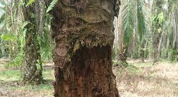
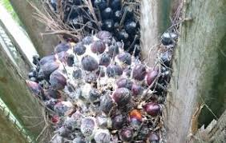
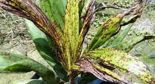
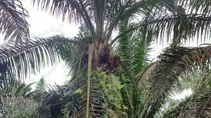
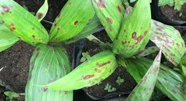
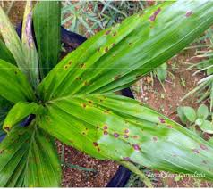
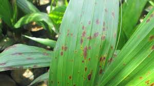
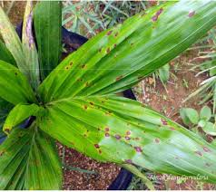
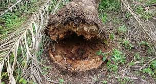
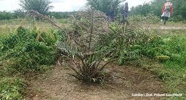

Informasi lengkap mengenai penyakit yang menyerang tanaman Anda.
| No | Nama Penyakit | Gambar | Daun | Akar | Batang | Buah | Bunga | Ciri Khusus |
|---|---|---|---|---|---|---|---|---|
| 1 | Busuk Pangkal Batang (BPB) |  | Daun menguning dan layu | Akar membusuk | Batang berlubang, berwarna coklat tua | Buah tidak berkembang | Tidak muncul bunga | Disebabkan oleh jamur Ganoderma boninense; bau busuk di pangkal batang |
| 2 | Busuk Tandan |  | Daun berwarna cokelat dan layu | Akar berwarna hitam dan lemas | Batang terlihat lemah | Buah berwarna cokelat dan busuk | Bunga mengering | Disebabkan oleh jamur Marasmius palmivorus; tandan buah layu dan bau busuk |
| 3 | Karat Merah |  | Daun dengan bintik merah | Buah menjadi kering dan kecil | Bunga kecil dan kering | Disebabkan oleh hama Tungau merah; bintik merah pada daun, buah, dan bunga | ||
| 4 | Layu Fusarium |  | Daun menguning dan menggulung | Akar mengalami pembusukan | Batang mengering dan layu | Buah tidak terbentuk | Bunga tidak berkembang | Disebabkan oleh jamur Fusarium oxysporum; tanaman cepat mengering |
| 5 | Antraknosa |  | Daun terdapat bercak hitam | Batang mengalami luka atau bercak hitam | Buah busuk dengan bercak hitam | Bunga tidak berkembang | Disebabkan oleh jamur Colletotrichum gloeosporioides; bercak hitam pada daun dan buah | |
| 6 | Penyakit Bercak Daun |  | Daun terdapat bercak kuning atau coklat | Disebabkan oleh jamur Curvularia atau Drechslera; bercak daun menyebar | ||||
| 7 | Penyakit Hawar Daun |  | Daun mengalami pengeringan dari tepi daun | Disebabkan oleh jamur Helminthosporium; daun mengering mulai dari tepi | ||||
| 8 | Penyakit Daun Bercak Kuning |  | Daun dengan bercak kuning | Disebabkan oleh Cercospora elaeidis; bercak kuning menyebar ke seluruh daun | ||||
| 9 | Busuk Akar |  | Daun menguning secara bertahap | Akar membusuk dan rapuh | Batang melemah | Buah tidak berkembang | Tidak muncul bunga | Disebabkan oleh jamur Pythium; tanaman mati perlahan, dimulai dari akar |
| 10 | Penyakit Mati Pucuk |  | Daun pada pucuk mengering dan layu | Akar berwarna cokelat dan kering | Buah tidak terbentuk | Bunga mengering | Disebabkan oleh bakteri Dickeya chrysanthemi; pucuk tanaman mengering dan mati |